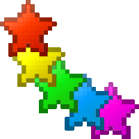
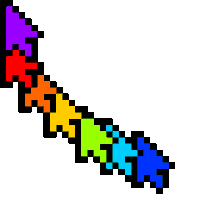
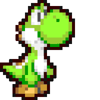

<!DOCTYPE html>
<html lang="ko">
<head>
    <meta charset="UTF-8">
    <title>following_pointer</title>
    
    <script src="jquery-1.12.4.min.js"></script>
    <script src="jquery-ui.min.js"></script>
    <script>
        $(function(){
            //마우스 포인터 위치에 포인터 이미지 따라다니게 하기
            $('#screen').mousemove(function(e){
                
                var posx = e.pageX+1;
                var posy = e.pageY+1;
                //+1을 하면 화면이동경계에서 좀 더 자연스러운 구현 가능
                
                //마우스 위치값에 따라 포인트이미지 위치변경
                $('#myc').css({
                    top: posy+'px',
                    left: posx+'px'
                });
                  
            }); //mousemove
            
            
            //li 각 영역에 마우스 오버시 커서이미지 변경하기
            $('#screen li').mouseenter(function(){
                var idx=$(this).index();
                
                switch(idx){
                    case 0: idx="images/13148a1.gif";
                        break;
                    case 1: idx="images/strtail.gif";
                        break;
                    case 2: idx="images/c200.gif";
                        break;
                    case 3: idx="images/yoshi-cursor.gif";
                        break;
                }
                
                //커서 이미지 변경하기 
                $('#myc').attr('src',idx);
                
            }); //mouseenter
            
            
        });
    
    </script>
    
    <style>
        html, body {
            margin: 0;
            padding: 0;
            /*보이는 화면에 가득차게 사용*/
            width: 100%;
            height: 100%;
            cursor: none;
            overflow: hidden;
        }
        #screen {
            margin: 0;
            padding: 0;
            list-style: none;
            position: absolute;
            top: 0;
            left: 0;
            width: 100%;
            height: 100%;
        }
        #screen li { /*li 4등분*/
            width: 50%;
            height: 50%;
            float: left;
        }
        #screen li:nth-child(1) {
            background: url(bg1.JPG) no-repeat 0/cover;
        }
        #screen li:nth-child(2) {
            background: url(bg2.JPG) no-repeat 0/cover;
        }
        #screen li:nth-child(3) {
            background: url(bg3.JPG) no-repeat 0/cover;
        }
        #screen li:nth-child(4) {
            background: url(bg1.JPG) no-repeat 0/cover;
        }
        
        /*마우스 포인터 이미지*/
        #myc {
            position: absolute;
            width: 50px;
            top: 0;
            left: 0;
            z-index: 99999; /*포인터는 가장 위! */
        }
    
    
    
    </style>
</head>
<body>
    <ul id="screen">
        <li></li>
        <li></li>
        <li></li>
        <li></li>
    </ul>
    
    <!--따라다닐 커서 이미지-->
    
    
    
    
    <!--
    
    -->
</body>
</html>